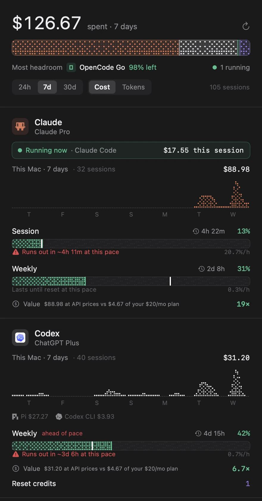
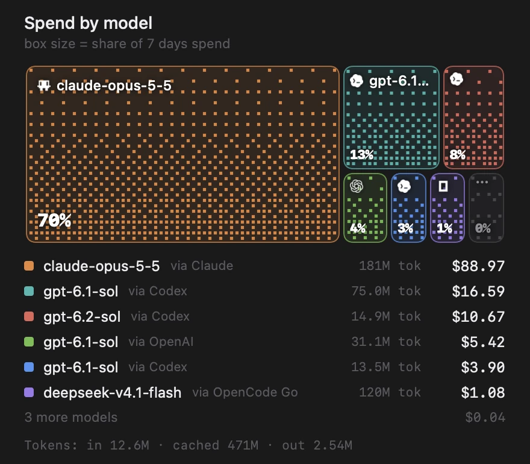

See what's left of every AI plan, long before you hit the limit.
Claude session resets in53% used
Every plan, one bar
Claude, Codex and OpenCode Go sit side by side in your menu bar, each as a small meter of what's used and what's left.
Counted down to the reset
Every session and weekly limit shows when it refills, to the minute, so you know whether to wait or switch.
A warning before the wall
Tally watches your pace and tells you when you'll run dry, while there's still time to finish the task.
What it's really worth
Your usage at API prices: $149 of Claude this week on a $20 plan. Free, open source, macOS 14+.
Click a meter and the panel tells you the rest.
Most headroom
The plan with the most room right now. Here, OpenCode Go with 98% left.
Running now
The session in progress and what it has cost so far: $17.55.
Session and weekly
Percent used, the time to the reset, and a white tick where an even pace would put you.
Runs out in ~4h 11m
Worked out from your last hour of use, so you hear about it while there's still time to finish.
19× value
$88.98 at API prices against $4.67 of a $20 plan, over the same seven days.


Where the money went, by model and by the plan that paid.
A dithered treemap of the week. Here claude-opus-5-5 took 70%, $88.97, all of it on Claude Pro.
Spend also groups by project, folding worktrees into their repo, and by tool, so Codex CLI and Pi on the same plan stay apart.
It reads what your agents already write. Nothing else leaves your Mac.
No account, no analytics, no server. Each login goes only to its own provider, and Tally never refreshes or rewrites one.
| Plan | Live limits | Usage from |
|---|---|---|
| ClaudePro, Max | 5-hour session, weekly, weekly per model | Claude Code |
| CodexChatGPT Plus, Pro | Session, weekly, reset credits | Codex CLI, Pi |
| OpenCode Go | Rolling 5 hours, weekly, monthly | Pi, OpenCode |
| OpenCode Zen | Spend only, free models | OpenCode |
| OpenAI API | Spend only | Pi |
| Data | Source |
|---|---|
| Spend, tokens | Session logs in ~/.claude/projects, ~/.codex/sessions, ~/.pi/agent/sessions and OpenCode's opencode.db |
| Claude limits | Claude Code's Keychain login, sent to Anthropic's usage endpoint |
| Codex limits | ~/.codex/auth.json, sent to ChatGPT's usage endpoint, or Codex's own logs |
| OpenCode Go | The Go API key from Pi or OpenCode, sent to OpenCode's usage endpoint |
| Prices | The LiteLLM price table, downloaded once |
Running in under a minute.
Paste this into Terminal. It fetches the latest release, checks its checksum, installs Tally into Applications and opens it. The meters appear in the menu bar; there's no Dock icon. The first scan of your logs takes a few seconds.
npx tally-menubar
No Node? Use curl instead
curl -fsSL https://github.com/PratikRai0101/tally/releases/latest/download/Tally.zip -o /tmp/Tally.zip \ && ditto -x -k /tmp/Tally.zip /Applications && open /Applications/Tally.app
- macOS14 Sonoma or later, Apple Silicon or Intel
- Node18 or later, for the npx command
- Signed in toat least one of Claude Code, Codex, Pi or OpenCode
- PriceFree, MIT licence
Tally isn't notarized by Apple yet. Both Terminal commands work straight away. A zip downloaded in a browser needs one approval: System Settings → Privacy & Security → Open Anyway.